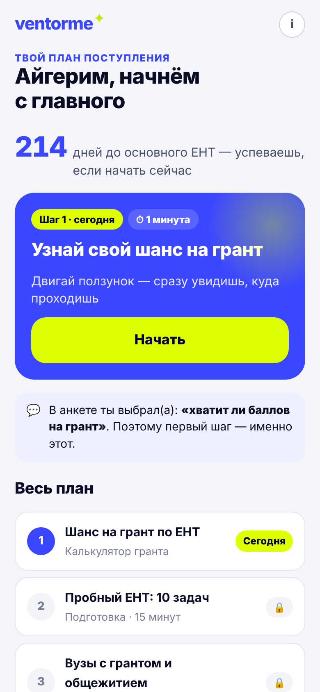
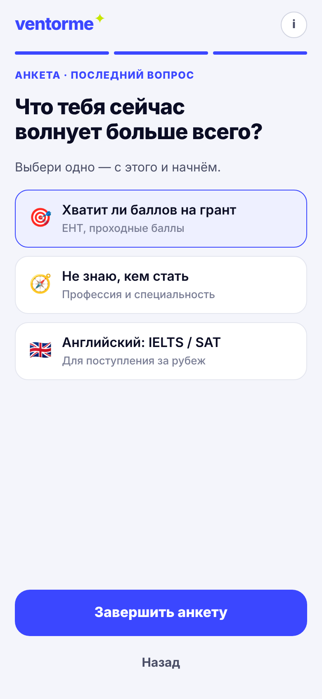
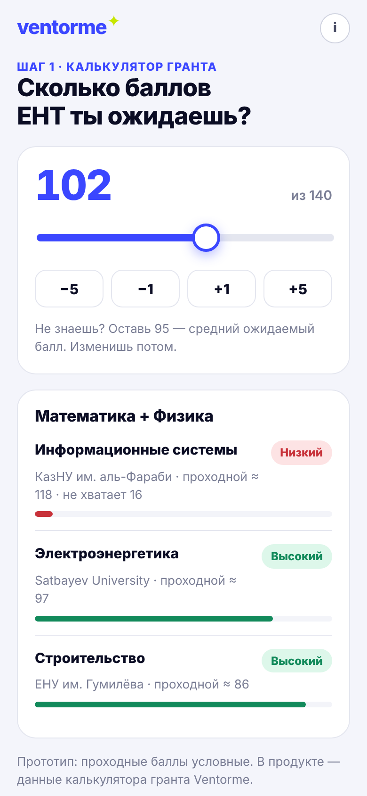
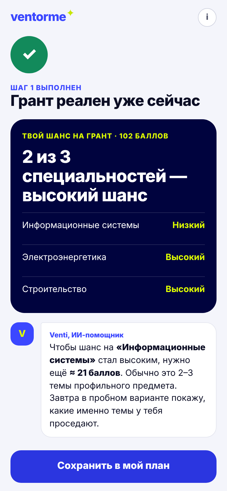
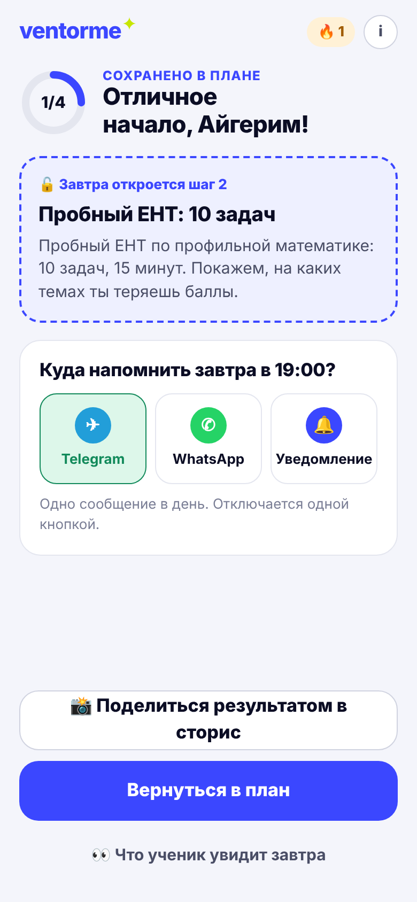
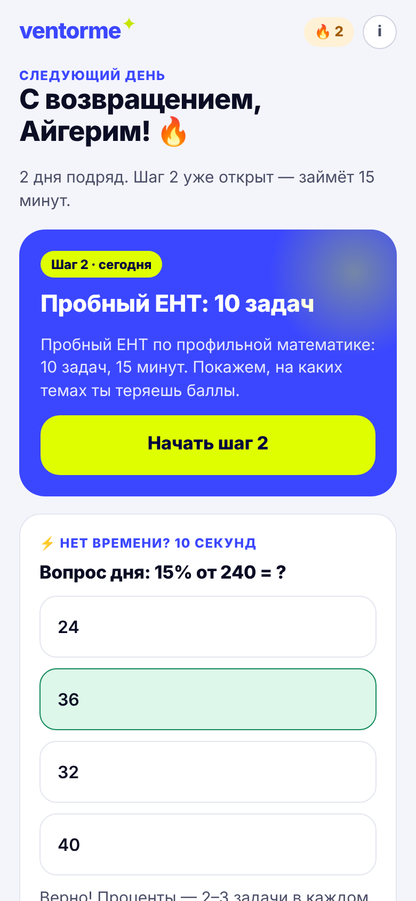

Анкета, которая наконец отвечает: что ученик видит после анкеты, чтобы сразу получить пользу и вернуться завтра.

Ученик рассказал о себе, а получил меню разделов. Ответы ни на что не повлияли, выбирать из 6 функций нужно самому.
40% открыли раздел, 6% дошли до функции. Путь от раздела до первой пользы слишком длинный.
Ничего не осталось незаконченным, нет обещания на завтра и канала, чтобы напомнить.
Анкета спрашивает,
но ничего не отвечает
Добавляем один вопрос: «Что тебя сейчас волнует больше всего?» И сразу отвечаем на него: не меню из шести разделов, а один шаг на сегодня.
Все функции уже есть в Ventorme. Меняем порядок и подачу, а не продукт.

1. Последний вопросодна забота вместо шести функций
3. Функция прямо на экранебез перехода в разделразрыв 40% → 6%
4. Результат + совет Ventiи незакрытый вопроспольза в 1-й заход
5. Шаг 2 завтра + напоминаниеTelegram / WhatsApp / push15% вернулись+ карточка результата для сторис: Instagram давал больше половины трафика главной (1 тур, Т3)

| Метрика | Сейчас | Цель | Учеников на группу* |
|---|---|---|---|
| №1. Полезное действие в первый заход хотя бы одна функция в первой сессии | 6% | 12% · 15% | 356 · 181 |
| №2. Возврат за 7 дней зашёл снова в дни 1–7 после регистрации | ~15% | 22% · 25% | 482 · 250 |
Ventorme не нужен новый продукт.
Нужно, чтобы анкета отвечала, а первый шаг занимал минуту.